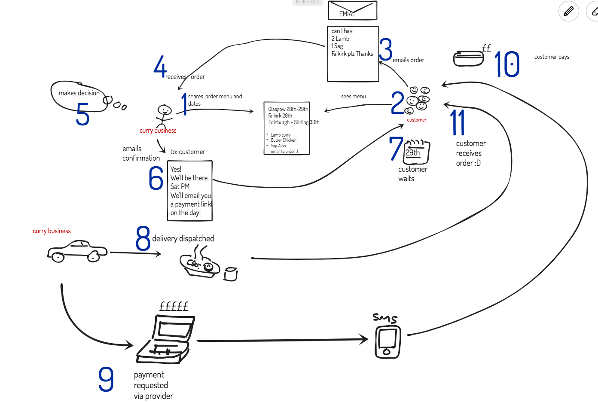
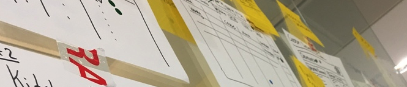
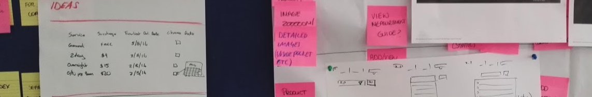
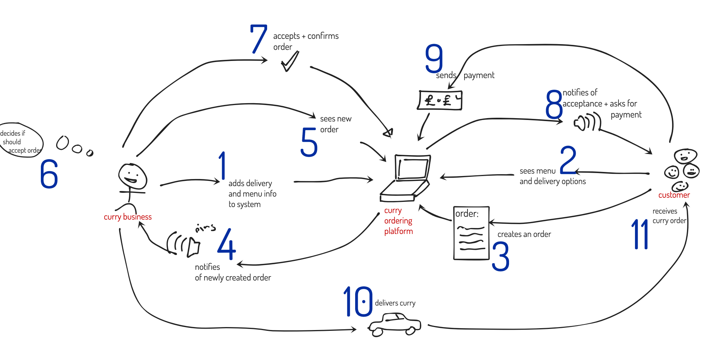

This is part 1 in a series of posts. In this series I am going to explain how I created a full-stack curry ordering app’. Yes, you heard that correctly. I built and deployed into production a curry ordering app that allows people to order curry online. The project was inspired by the lovely team over at #hardeepisyourcurry
I’m going to share how I did it in as much detail as possible, while highlighting the learning curves and problems that I faced along the way. Across several posts in this little series I’ll go into specifics about everything from UX and User Stories to Systems Design and networking and Deployment with things like Docker and Kubernetes. I’ll share findings on React and Redux and spill the beans on what I’ve found to be some pretty nice features of Spring Boot. So if you’re interested in gaining a perspective that goes all the way from User Stories and UX to nginx configs and Redux Thunks, please bookmark and follow me on Twitter or LinkedIn to keep informed of new posts.
I’ve found that writing about things like this helps me remember them longer term, so this is as much for myself than anyone else. But if someone reads it and finds it interesting or useful, that’s cool too.
Part 1 - Understanding the Problem
Research is important. So I jumped onto twitter and got on the curry bandwagon. This is an actual working curry service (Curry As A Service?) operating in central Scotland. It’s ran by comedian and chef Hardeep Kohli. At the moment it’s advertised via twitter and orders are taken by email for delivery on certain dates and locations across central Scotland. The instructions from Hardeep Kohli were simple:
- Deliveries in certain towns across Scotland on certain days
- Email with what you want from the menu (shared in a tweet)
- You’ll be told if your order made it in
I emailed my order as instructed and after about 10 mins I got a reply «You’re in!» it said.
We’ll deliver your curries on Saturday sometime in the afternoon. We’ll send a payment link just before we deliver to take your payment.
This was beautiful The MVBP (Minimum Viable Business Product) was already in place! I quickly started plotting my plans. I realised that my objective was to mimic their current system as closely as possible before adding on any fancy features.
Mimic the current process
From my experience as a Product Manager, I know that it’s all too easy to get carried away and designing bells and whistles and trying really hard to make it flash with amazing cool whizzy features. Especially when designing a digital system that replaces a working manual pen-and-paper system that’s being used to success now.
I can’t express how much of a bad idea this is! Try to understand exactly how the system is currently being implemented then implement the digital version of that system that closely models the current workflow! This is super important. Don’t get carried away with features and ways of operating that are not currently already in place. Do this becuase if you try to bring in new ideas at this stage, the early stage prototype will be even more difficult to verify if it’s correct as you’ll have nothing to compare the processes to. You need to be comparing 🍏 with 🍏.
Diagram, diagram, diagram. The current process mapped:
 I’m well known for using Ziteboard at work, so I took to Ziteboard to map the current process as it stands. Notice that the connections between the parts of the map are described as verb noun. «receive order», «email confirmation» etc. It’s important when doing this kind of thing to keep the descriptions of the interactions in this format as it’s the least ambiguous way to communicate what’s happening.
For the sake of this simple process map I’ve got two kinda «personas» (they’re not really full personas yet btw). Curry Business is the person running the curry company, and Customer is their customer.
The points below match to the numbers in blue in the diagram above.
- 1. Curry business shares menu and dates (currently done one Twitter)
- 2. Customer sees menu (again on twitter)
- 3. Customer emails order
- 4. Business receives order
- 5. Business makes decision
- 6. Business Emails confirmation
- 7. Customer waits for delivery
- 8. Curry delivery is dispatched
- 9. Just before or just after 8, the payment is requested via the separate payment provider
- 10. Customer receives pay request and pays
- 11. Customer receives curry order
 I learned about this mapping process when Experimenting with Design Sprints when working for ResDiary. An online restaurant booking and management platform.
Mapping like this is the outcome of the first day in the 5-day design sprint created by Google Ventures for helping prototype and build products effectively and quickly.
I learned about this mapping process when Experimenting with Design Sprints when working for ResDiary. An online restaurant booking and management platform.
Mapping like this is the outcome of the first day in the 5-day design sprint created by Google Ventures for helping prototype and build products effectively and quickly.
Some notable points that I gleaned from mapping out the current system using the process mapping technique from «Sprint»:
- The current solution is lightweight and extremely effective
- Delivery days are fixed by town/city at the start of every week. Each week a new tweet is sent out with the weeks menu and delivery locations. Essentially, you can only get curry if you live in one of the delivery locations, and only on the days specified
- As a result of above, the business works in weekly cycles with new menu and dates appearing online (twitter) each week.
- No specific delivery time is promised upon making an order. This is becuase the curries are cleverly delivered cold, meaning the business isn’t rushing to deliver all curries around dinner time. The most detailed estimate is either AM or PM.
- Payment is taken on trust a little. I received my payment request after getting the curry. Many local business that deliver seem to operate this way.
Generally, there’s not much to critique about the current process. It works extremely well, so the aim of any system wouldn’t be to immediately modify the current process in any significant way.
Initial thoughts on benefits and related hypothesis
From looking at the current process, the biggest challenge that could be eradicated would be payments. An integrated ordering and payment solution seems the most obvious. I presumed it was difficult taking payments on exactly the same day of delivery, but still recognised the flexibility that this offers the business. I spoke to the business directly about this and many other things and they confirmed this hypothesis and helped me glean the following:
We believe that by allowing the business to ask for payment as soon as an order is confirmed will provide a better experience for the business and less unpaid orders and a more consistent experience for the customer.
-
We believe that an integrated ordering and payment platform will help the business massively with tracking orders and their statuses.
-
We believe that the current ordering system leads to leaks in potential repeat business opportunities due to lack of marketing pipeline.
-
We believe that a customer facing online ordering platform will improve repeat business massively by bringing around a digital representation of a marketing pipeline.
-
We believe that tweeting the menu weekly can cause issues with menu versions as it’s possible for customers to read the menu from an older tweet
Product Vision 👁

– Using a Product Vision board. I created some statements that loosely represented my vision for the product and came up wit the following vision statement:
The platform is being created to simplify and integrate the curry ordering process. This will be of benefit to the customer and the business. It will serve as a foundation for building a highly refined user-focused experience that doesn’t in any way hinder the current process and actually improves it through sheer simplicity in every way. The system will integrate everything including deliveries and payments and give an end-to-end experience for customers and the business users alike.
I also done some work on «Target Groups» and «Business Goals» - as per the Product Vision Board created and popularised by Roman Pichler
The product vision board is undeniably an excellent tool that’s designed to help understand the true vision and business value of a product to a customer. Though when doing this I got a little bored (no pun intended) as I felt that I knew enough about the vision and that I could confirm my Hypothesis and go straight to writing user stories… Sorry Roman
User interview
I spoke with Hardeep from the hardeepisyourcurry team briefly on zoom. I managed to confirm most of my hypothesis, but at the same time communicated some more advanced ideas which I had to move to one side.
Often when speaking to users they can become fixated on the solution and then start communicating ideas as solutions rather than problems. This can be difficult for PM’s to work around and it’s important to realise that the super-set of solutions to problems come from a sub set of problems. Also that a different solution can be created to eliminate the same problem. Teams which allow their staff to communicate too much in the solution space end up having products which implement those solutions as requested. It’s better to find the reason behind a suggested solution before agreeing to implement it. This comes back to the five whys and root cause analysis.
It’s our job to scratch under the surface of a proposed solution, ask why, do some digging. Then we can understand the needs of the user more clearly
Job Stories, not User Stories

I’ve discovered that classic user stories just don’t cut the mustard..
the classic user story..
- As a _____persona here
- I want _____ feature here
- So that _____desired outcome here
… is vague and difficult to work with.
Job Stories, however focuses the story around a job that needs to be done. Job Stories come from the Jobs To Be Done framework (JTBD) which is a really nice alternative to user stories.
The anatomy of a Job Story isn’t too difficult to remember:
- When _____Something happens, or the need for some action arises
- I want to _____achieve some task
- So I can _____obtain some benefit
Replacing the User Story with the Job Story is a great introductory article in why Job Stories are better than User Stories and goes into a lot more detail than I will here, but I loved the example of where user stories fall down with this user story for a snickers snack.
User Story vs Job Story
- As a human / person who eats food / user with a mouth
- I want to eat something
- So that I can stop my hunger quickly
.. RUBBISH. So all humans will want a snickers?
Job Story focuses the story around an action or event, rather than focusing on a particular persona.
- When I’m hungry and on the go
- I want to eat a snack quickly
- So I can satisfy my hunger and move on with what I’m doing
Job Stories for the WIN. We now have a framework for putting so much more context around the scenario as it’s based on a situation. In this wonderful post 5 Tips for Writing a Job Story on JTBD.info, Alan Klement talks about how to add contextual to make our job stories work a lot better.
Current Job Stories for Curry Customers
- When I want a tasty curry for dinner over the weekend
- I want to order and pay for the curry online and have it delivered
- So I can plan my weekend knowing that there’s one less meal to make and that it will be really good
-
- When I order a tasty curry
- I want to know that the order has been received and stay informed on the status
- So I can have certainty over what’s happening with my planned meal
-
- When I’ve order a tasty curry for the coming weekend
- I want to know as soon as possible if my order has been confirmed
- So I can have certainty over what’s happening with my planned meal or if I need to arrange alternatives for that day
Current Job Stories for Curry Business
- When it comes time to change the menu for the coming week of orders
- I want to update the menu in one place
- So I can dependably know that the current menu is set and that someone isn’t reading an older menu
-
- When it comes time to update the delivery days for the week
- I want to update the delivery dates in one place
- So I can dependably know that the delivery dates are set and that someone isn’t reading older delivery dates and so I can receive orders only for those new delivery dates
-
- When I receive a curry order from a customer
- I want to be able to decide if we can actually satisfy their order
- So I can work out if we can actually deliver to their location on the day they’ve asked for with the order they’ve chosen
-
- When I receive a curry order from a customer
- I want to be able to accept or decline the order
- So I can control the number of orders we’re preparing and delivering each day in the locations we’ve requested
-
- When I’ve decided to confirm an order from a customer
- I want to inform them automatically that we will fulfil the order as well as send them a request for payment
- So I can keep my customers informed and in the loop about the status of their order request as well as make sure I’m offering them a chance to pay as early as possible while still keeping control over the process myself
Solution Process Map (vision)
Using the job stories I sketched out a process map that would mimic the current process as closely as possible, but using a web platform. The jobs to be done by the curry business and the customer ordering curries are mapped on here.

- 1. Business creates menu and delivery dates on system
- 2. Customer sees menu
- 3. Customer creates an order
- 4. System notifies curry business that order has been created
- 5. Business sees new order
- 6. Business decides if confirming order
- 7. Business accepts and confirms order on system
- 8. System notifies customer of acceptance + asks for payment
- 9. Customer pays on ordering system (no separate payment system required)
- 10. Business delivers order
- 11. Customer receives curry
This is my proposed solution! Combined with the job stories above I turned that into a working full stack web app’.
This was Part 1 of the series Full Stack Curry.
In the next post I’ll explain the systems architecture and building blocks of the application.
Got feedback on the article? Got questions, corrections or ideas? If you want to talk to me, I am really open to meeting new people and learning things. Please reach out..
- Say hi on Twitter https://twitter.com/colin_riddell
- Follow me on LinkedIn https://www.linkedin.com/in/cjriddell/